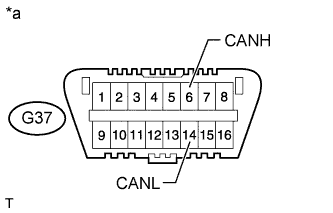
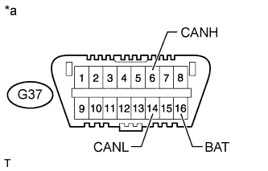
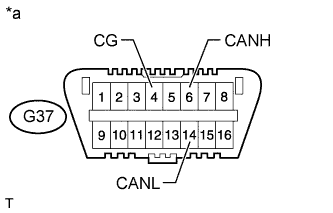

CAN COMMUNICATION SYSTEM > HOW TO PROCEED WITH TROUBLESHOOTING |
| IMPORTANT POINTS CONCERNING TROUBLESHOOTING |
| Condition | Waiting Time |
| Vehicle enrolled in G-BOOK system | 6 minutes |
| Vehicle not enrolled in G-BOOK system | 1 minute |
DTCs indicating a CAN communication malfunction are also stored due to internal or power source-related problems in ECUs or sensors of systems using CAN communication. Therefore, check whether codes indicating internal or power source-related problems in those systems are output together with the CAN communication DTCs.
It is possible to inspect the circuit of the DLC3 branch line or V1 bus main line for malfunctions by inspecting the terminals of the DLC3 using SST.
It is possible to check which ECUs (sensors) are not able to communicate via CAN communication by checking the "Bus Check" function of the intelligent tester (when the DLC3 branch wire and V1 bus main wire are normal).
For past malfunctions of the V1 bus, the ECUs (sensors) which cannot communicate via CAN communication can be determined from the combination of CAN communication DTCs that are output.
The power management control ECU (Power Management1) detects malfunctions in the V2 bus circuit and outputs DTCs depending on the malfunctioning areas. The ECUs (sensors) which cannot communicate via CAN communication can be determined from the combination of CAN communication DTCs that are output.
The main body ECU (multiplex network body ECU) detects malfunctions in the MS bus circuit and outputs DTCs depending on the malfunctioning areas. The ECUs (sensors) which cannot communicate via CAN communication can be determined from the combination of CAN communication DTCs that are output.
The power management control ECU (Power Management) detects malfunctions in the power management bus circuit and outputs DTCs depending on the malfunctioning areas. The ECUs (sensors) which cannot communicate via CAN communication can be determined from the combination of CAN communication DTCs that are output.
The driving support ECU assembly detects malfunctions in the sensor bus circuit and stores DTCs depending on the malfunctioning areas. The ECUs (sensors) which cannot communicate via CAN communication can be determined from the combination of CAN communication DTCs that are output.
When an open circuit malfunction is confirmed, before disconnecting the connectors for inspection, check whether the connectors are loose by pushing in the connector case.
When a connector is disconnected, check if the connector terminals or case is damaged, deformed, deteriorated, etc.
| 1.VEHICLE BROUGHT TO WORKSHOP |
| |||||
| 2.INSPECT BATTERY VOLTAGE |
| |||||
| 3.CHECK AND CLEAR DTC* |
Using the intelligent tester, perform the all DTCs check.
| |||||
| 4.CHECK INSTALLED SYSTEMS (ECU AND SENSOR) THAT USE CAN COMMUNICATION |
Based on the vehicle equipment and specifications, confirm the systems that use CAN communication (Click here).
| |||||
| 5.CHECK FOR OPEN CIRCUIT IN DLC3 BRANCH WIRE AND V1 BUS CIRCUIT MAIN WIRE AND SHORT CIRCUIT (CANH - CANL) |
Disconnect the cable from the negative (-) battery terminal before measuring the resistances of the main wire and the branch wire.
|  |
Measure the resistance according to the value(s) in the table below.
| Tester Connection | Switch Condition | Specified Condition | Proceed to |
| G37-6 (CANH) - G37-14 (CANL) | Engine switch off | OK (54 to 69 Ω) | A |
| G37-6 (CANH) - G37-14 (CANL) | Engine switch off | NG (Higher than 69 Ω) | B |
| G37-6 (CANH) - G37-14 (CANL) | Engine switch off | NG (Below 54 Ω) | C |
| *a | Front view of DLC3 |
|
| ||||
|
| ||||
| |||||
| 6.CHECK FOR SHORT TO +B IN CAN V1 BUS (CANH, CANL - BAT) |
|  |
Measure the resistance according to the value(s) in the table below.
| Tester Connection | Switch Condition | Specified Condition |
| G37-6 (CANH) - G37-16 (BAT) | Engine switch off | 6 kΩ or higher |
| G37-14 (CANL) - G37-16 (BAT) | Engine switch off | 6 kΩ or higher |
| *a | Front view of DLC3 |
|
| ||||
| |||||
| 7.CHECK FOR SHORT TO GND IN CAN V1 BUS (CANH, CANL - CG) |
|  |
Measure the resistance according to the value(s) in the table below.
| Tester Connection | Switch Condition | Specified Condition |
| G37-6 (CANH) - G37-4 (CG) | Engine switch off | 200 Ω or higher |
| G37-14 (CANL) - G37-4 (CG) | Engine switch off | 200 Ω or higher |
| *a | Front view of DLC3 |
|
| ||||
| |||||
| 8.CHECK ECUS CONNECTED TO CAN BUS* |
Connect the cable to the negative (-) battery terminal.
Select "Bus Check" from "System Select".
Check the display of the connected ECUs and sensors for a minute.
| Inspection Result | Proceed to |
| All ECUs and sensors connected to CAN communication system displayed on screen (CAN bus circuit currently normal) | A |
| Except for power management control ECU (Power Management1), no ECUs connected to V2 bus are displayed (V2 bus main wire open or short malfunction) | B |
| No ECUs connected to V2 bus are displayed (branch wire between power management control ECU and V2 bus circuit is open) | C |
| Except for power management control ECU (Power Management), no ECUs connected to power management bus are displayed (power management bus main wire open or short malfunction) | D |
| No ECUs connected to power management bus are displayed (power management bus circuit is open) | E |
| Except for main body ECU (multiplex network body ECU), no ECUs connected to MS bus are displayed (MS bus main wire open or short malfunction) | F |
| No ECUs connected to MS bus are displayed (branch wire between main body ECU (multiplex network body ECU) and MS bus circuit is open) | G |
| Except for driving support ECU assembly, no ECUs connected to sensor bus are displayed (sensor bus main wire open or short malfunction) | H |
| No ECUs connected to sensor bus are displayed (branch wire between driving support ECU assembly and sensor bus circuit is open) | I |
| Single ECU or sensor that should be connected to CAN communication is not displayed (ECU or sensor branch wire open or communication stop) | J |
| ECU or sensor that should be connected to CAN communication is not displayed or display is intermittent during check (ECU or sensor branch wire open on one side) | K |
|
| ||||
|
| ||||
|
| ||||
|
| ||||
|
| ||||
|
| ||||
|
| ||||
|
| ||||
|
| ||||
|
| ||||
| |||||
| 9.CHECK COMMUNICATION MALFUNCTION DTC (PAST DTC CHECK)* |
Select "Bus Check" from the screen on the intelligent tester.
Write down all of the DTCs stored in each ECU.
| Inspection Result | Proceed to |
| ECU connected to the V1 bus outputs communication trouble code | A |
| Power management control ECU (Power Management1) outputs network malfunction trouble code (U1002) (V2 bus main wire past malfunction) | B |
| Power management control ECU (Power Management) outputs network malfunction trouble code (U1002) (power management bus main wire past malfunction) | C |
| Main body ECU (multiplex network body ECU) outputs network malfunction trouble code (U1002) (MS bus main wire past malfunction) | D |
| Driving support ECU assembly outputs network malfunction trouble code (U1002) (Sensor bus main wire past malfunction) | E |
| Power management control ECU (Power Management1) outputs trouble code other than network malfunction trouble code (U1002) (past malfunction of ECU or branch wire connected to V2 bus) | F |
| Power management control ECU (Power Management) outputs trouble code other than network malfunction trouble code (U1002) (past malfunction of ECU or branch wire connected to power management bus) | F |
| Main body ECU (multiplex network body ECU) outputs trouble code other than network malfunction trouble code (U1002) (past malfunction of ECU or branch wire connected to MS bus) | F |
| Driving support ECU assembly outputs trouble code other than network malfunction trouble code (U1002) (past malfunction of ECU or branch wire connected to sensor bus) | F |
|
| ||||
|
| ||||
|
| ||||
|
| ||||
|
| ||||
| |||||
| 10.CHECK DTC COMBINATION TABLE (V1 BUS BRANCH WIRE OPEN, PAST COMMUNICATION STOP MALFUNCTION) |
Based on the combination of output CAN communication system DTCs, determine which ECUs and sensors have a communication stop malfunction (Click here).
| |||||
| 11.PERFORM MALFUNCTION SIMULATION TEST (V1 BUS CIRCUIT MAIN WIRE PAST MALFUNCTION)* |
Using the intelligent tester, clear all DTCs.
Perform a malfunction simulation test on all harnesses and connectors related to the V1 bus main wire.
Check the DTCs that were output as a result of the malfunction simulation test. Then determine the malfunctioning area.
| |||||
| 12.ADJUST, REPAIR AND REPLACE |
| |||||
| 13.CLEAR DTC* |
Using the intelligent tester, clear all DTCs.
| |||||
| 14.CONFIRMATION TEST |
|
| ||||
|---|---|---|---|---|---|